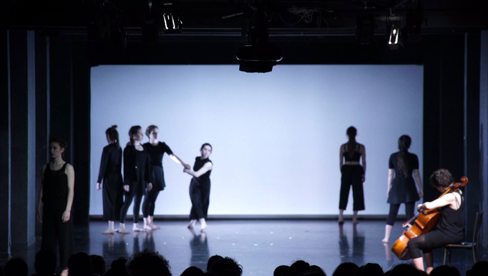
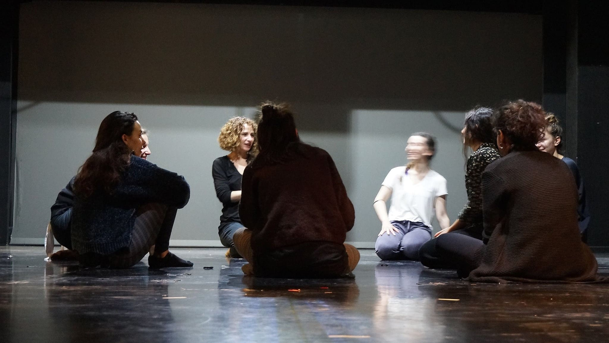
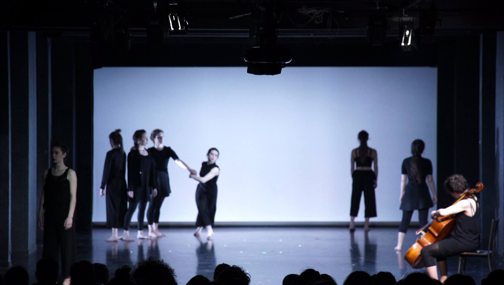
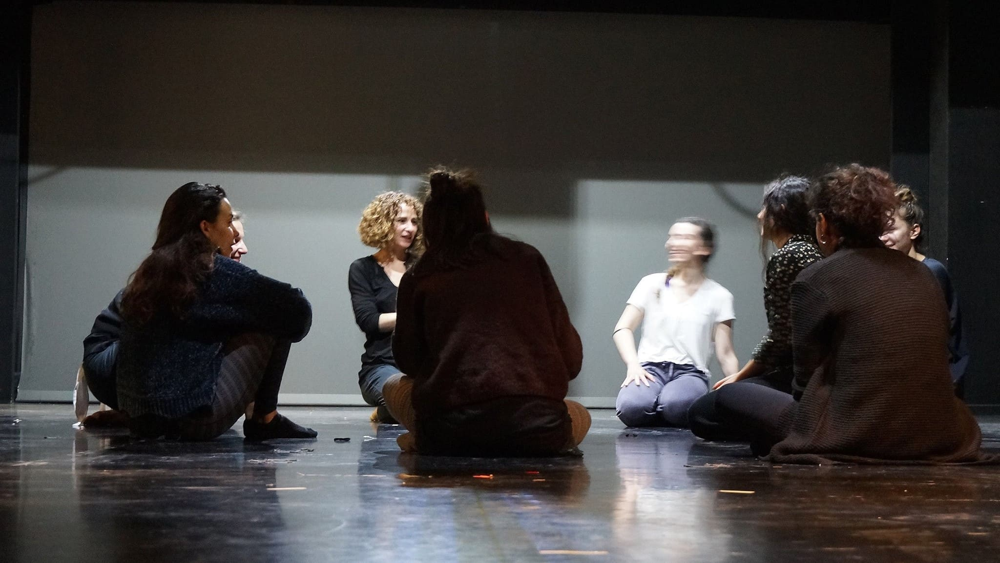

"US-and-THE OTHERS" - ATHENS VIDEO DANCE PROJECT
 



Athens School of Fine Arts, Athens April 2017.
Role: Sound Designer - Performer
Participated as both a sound designer and performer in "US-and-THE OTHERS," a project exploring themes of otherness and diversity. I created sound effects and managed the overall sound design, enhancing the audience's experience during screenings of dance films and lectures by artists and social science experts. This dual role allowed me to engage creatively with complex social issues while contributing to a collaborative artistic environment.
Click here for the video performance